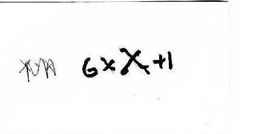
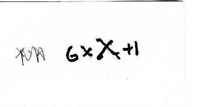
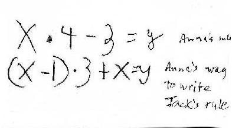

Anna L., a 4th grader, does some fine Mathematics
INFINITE SERIES (chapter 1 in Don's worksheet book)-Anna worked on these two for a few weeks:
She colored in pieces of an 8x8 square to show this infinite series:
On the left side above, she wrote about what is happening "..It gets closer and closer to one..".
Don asked Anna to graph the partial sums 1/2, 3/4, 7/8, 15/16, ... vs. # of terms added for the infinite series 1/2 + 1/4 + 1/8 + ... below:
She saw that the graph of the partial sums 1/2, 3/4, 7/8, ... approaches 1, which she said about the picture above that.
Anna colored in pieces of a 9x9 square to show the infinite series 1/3 + 1/9 + 1/27 + ...
On the right side above, she wrote about what is happening "It gets closer to 1/2..".
Anna then graphed the partial sums 1/3, 4/9, 13/27, ... vs. # of terms added for the infinite series 1/3 + 1/9 + 1/27 +... below,
..and she said from this graph that it shows the series approaches 3/6= 1/2, again. We'll continue with the infinite series soon.
+++++++++++++++++++++++++++++++++++++++++++++++++++++++++++++++++++++++++++++++++++
EQUATION SOLVING (chapter 8): Don asked Anna if she wanted to try something different (they will go back to the infinite series).
Anna solved equations like: 2x + 3 = 14 {5 1/2}; then Don had her make up some equations. She made up this one: 8x + 1/2 = 15. Anna's answer is at the right below, 1 13/16. Don asked her to explain to him how she figured it out. Anna said she knew that 14 1/2 + 1/2 = 15. She also realized that 8x = 14 1/2, so divided 14 1/2 by 8 to get x. The rest is shown below.

She wrote 14 1/2 as 10 + 4 + 1/2 then 8 + 2 + 4 + 1/2 and then proceeded to divide each piece by 8, changing each of the resulting fractions to 16ths: 16/16 + 4/16 + 8/16 + 1/16 = 29/16= 1 13/16!
Don sees his students solve problems in ways that he has never seen, which is exciting! Three times this week he was reminded of this quote:
Sarah, age 7, said to Don unsolicited, after working on an infinite series in Ch. 1: "At school when we do math we use different methods that I am not used to. And they are hard. But if I used my own methods it would be easy."
+++++++++++++++++++++++++++++++++++++++++++++++++++++++++++++++++++++++++++++++++
WORD PROBLEMS- Don circled the problems Anna should do. These were taken from a 9th grade algebra book.
Anna had no real problems doing these. Her Mom helped some, even trying to solve the problem using algebra. This was fine, Don however, lets his students guess a lot and try things. See Polya's How to Solve It , a classic on problem solving.
++++++++++++++++++++++++++++++++++++++++++++++++++++++++++++++++++++++++++
3 November '09
GUESS MY RULE (see chapter 6)- W.W. Sawyer, who just died recently at age 97, was a fine teacher and mathematician (see Mathematicians Delight; Pelican Books). Many mathematical ideas Don works on with children come from Sawyer and Bob Davis (The Madison Project- see Discovery in Mathematics+).
Don asked Anna if she would like to play Guess My Rule. She said she had done these before, so he gave her one he thought was hard. He wrote the rule on the back of a 3x5" blank card. She gave him 3, the machine gave back 12, she gave him 6, the machine gave back 39. After just 2 pairs of numbers, she figured out the rule to be x2 + 3 !
(front of 3"x5" card)
(back of 3"x5" card)
Don asked Anna to make one for him to figure out ("don't make it too hard for the old man"):
(front of 3"x5" card)
 

(back of 3"x5" card)
Don got her rule and when they looked at her written rule on the back of the card above, he suggested she not use an x in writing the multiplication sign, 6xX+1, but write just 6x+1=y or use a dot for the multiplication sign, as in 6.x+1=y
Jack (of 'Jack's math' fame), was in this session and was listening to Don and Anna, so Don asked Anna to make a rule for Jack to figure out:
(front of 3"x5" card)

Jack found a pattern in the y-numbers, they go up 4 each time. That was correct, is important and is called a recursive rule, to get from one y to the next. Don said that 4 was an important number in the rule -which Jack later proved Don wrong in what he did! Then Don asked Jack if he put in 100 for the input number, what would the machine give him back . He was stumped by this, so Don suggested he find what happens to the x-number/input-number to get the y-number/output-number each time. He really looked at the numbers. He noticed that for 4, 3x3 + 4 = 13, and for 5, 4x3 + 5 = 17. Don never expected that! Both Don and Anna listened carefully to what Jack was saying, but he couldn't write the rule. Don had Jack's rule, but he asked Anna to write the rule that Jack was describing. Anna first wrote x-1. 3 + x = y. Don suggested she needed parentheses around the x-1, because they would have to multiply 1 times 3 before subtracting from x (the order of operations). Anna had written her rule on the back of the card and wrote the rule for Jack's way of doing it.
(back of 3"x5" card)

Don didn't think of it then, but would wait for their next session to have them show algebraically that both written rules were equivalent.
+++++++++++++++++++++++++++++++++++++++++++++++++++++++++++++++++++++++++++
SOLVING QUADRATIC EQUATIONS (see chapter 8)
Don started Anna on solving quadratic equations like x2 - 5x + 6 = 0 by guessing, as usual (chapter 8). After she got five equations solved correctly, he asked Anna to make one up for him, and one for Mom and one for Dad.
Fine work, Anna! What a day!
++++++++++++++++++++++++++++++++++++++++++++++++++++++++++++
Anna's algebra
- Anna came in
the next session with the following. Don needed to really look at this, and
agreed that it worked. She had worked with her Mom on the diagram in the upper
right below to show that
is true for any x, an identity!:

Again, fine job, Anna!